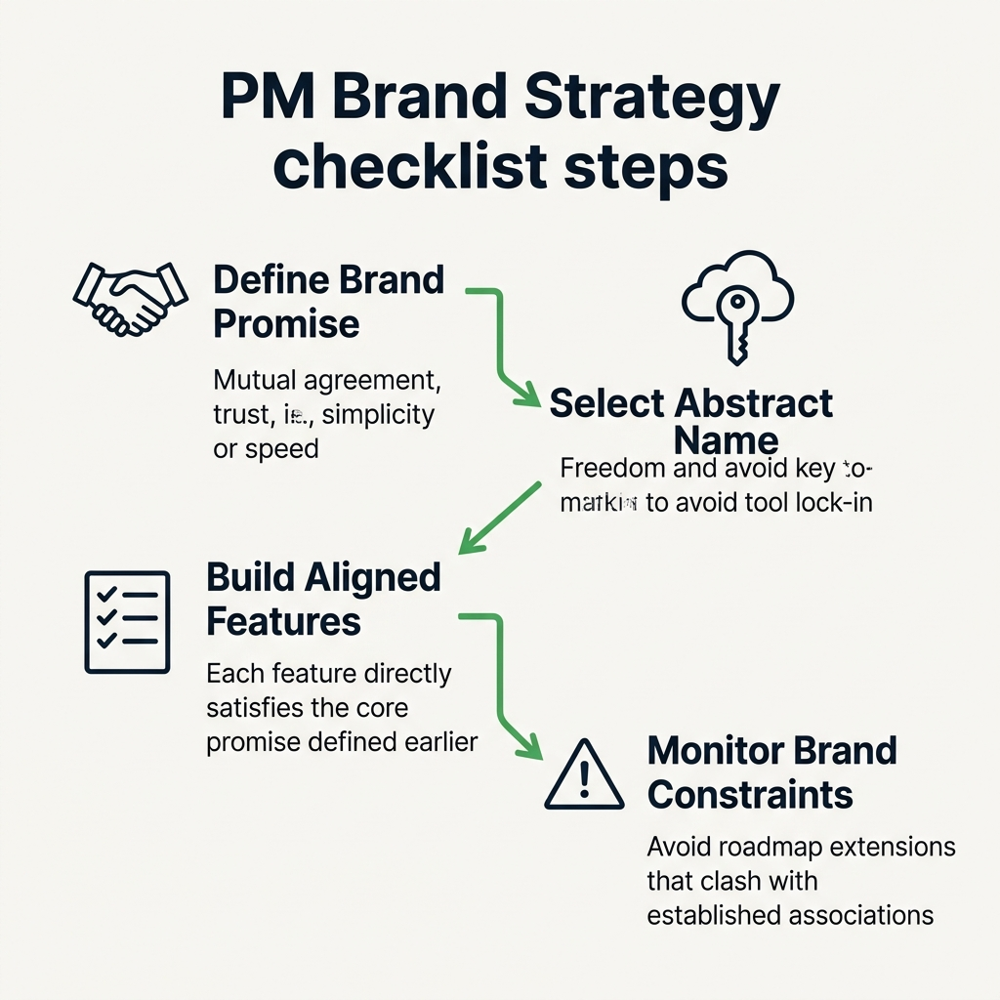

Your goal
Analyze how early product choices build brand equity, diagnose name extendability pivot risk, and verify that feature roadmaps remain aligned with brand promises.
Lecture overview
Branding is one of the most overlooked elements in technology startups. Yet, in an early-stage company, every product feature, UI layout, and onboarding choice represents a brand promise.
1. What is a Brand?
In the technology space, your brand represents the promises that you make to your customers. It is not just a logo or a marketing campaign. In the early days, brand, company, product, and founders are all the same thing. Product choices (simple UI, developer friendly, fast speed) are what establish brand perception.
2. The Product-Brand Lifecycle Loop
Initially, product decisions shape the brand. But once the brand matures, it drives and constrains what products or extensions you can build. For instance, Google Maps carries a brand utility promise (data search), while Facebook Messenger represents a social promise. A "Google Messenger" would confuse users because Google has no established social network promise.
3. Brand Extendability and Strategic Pivots
Can your brand name pivot to support a changing roadmap? If you name your company after your initial delivery medium (e.g. 1Password or OnePass), you lock your brand. If passwords become obsolete and you must store biometric datasets, the name fails to extend. Rebranding later destroys massive accumulated brand value.
4. The Power of Invented Words
Invented, abstract words (e.g. Slack, Yahoo, Microsoft, Bing) are highly memorable and carry zero structural technology locks, making them infinitely extendable for future strategic pivots.
Practical B2B Example
Situation
A PM starts a venture named "ExcelConnector" which imports data from Excel files into databases. After 2 years, spreadsheet users migrate to Google Sheets and Airtable.
Problem
If they keep the name "ExcelConnector," they cannot attract Google Sheets customers. If they pivot and rebrand to "SyncMage," they lose all accumulated SEO rankings and brand value.
Lesson
Choose abstract, extendable brand names from Day 1 to avoid technology constraints, even if you launch with a single specific integration.
Common Misunderstandings
"Branding is just a task for the marketing team"
Correction: Marketing controls the advertisements, but the product controls the customer experience. If a PM designs a complex, hard-to-use checkout flow for a product that promises "Simple and fast," the product decision breaks the brand promise. Product managers own the core brand value.
"Descriptive names are better because they explain what we do immediately"
Correction: Descriptive names (e.g. "OnlineFaxService") help with early search engine traffic but represent a massive liability if the product needs to pivot or expand to related areas (e.g. cloud file sharing).
Key concepts and definitions
- Brand Promise: The explicit and implicit expectations set by a product's behavior, design, and marketing.
- Brand Extendability: The capacity of a brand name to support pivots, product expansions, and new target industries without losing brand equity.
- Invented Word Branding: Naming a company with abstract, created terms to avoid technology dependencies and functional constraints.
Visual summary

Interactive Practice
Brand Name Extendability Quiz
Classify whether these names are restricted (risk of tool lock-in) or extendable (flexible for pivots).
Brand Promise Alignment Sandbox
A PM works on a product with a core brand promise of "Extreme Simplicity". Evaluate whether the proposed roadmap features align with or violate this promise.